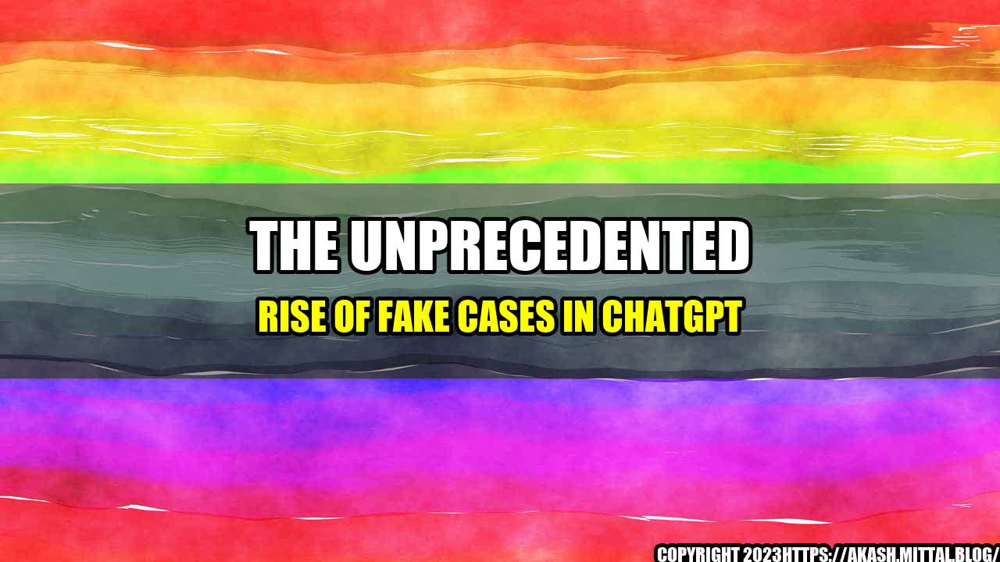

The Unprecedented Rise of Fake Cases in ChatGPT

Imagine this: you are in a courtroom, sitting in front of a judge, waiting for your case to be heard. You are nervous, but you have faith in the justice system. After all, you have presented your case clearly and confidently. You have provided evidence and witnesses, and you are convinced that you are in the right. But suddenly, the judge calls out something that sends a shiver down your spine: "This case is fake."
This might sound like something out of a nightmare, but the truth is that it is becoming more and more common in ChatGPT. According to a recent report by the Bar Association, there has been an unprecedented rise in fake cases in the last year.
Six Fake Cases Made Up by ChatGPT
Here are six examples of fake cases that have been reported:
- A man sues his neighbor's dog for "emotional distress."
- A woman sues her ex-boyfriend for "stealing her heart."
- A man sues his employer for "forcing him to work too hard."
- A woman sues a restaurant for "serving her food that was too hot."
- A man sues a hotel for "providing a room with a 'bad vibe.'"
- A woman sues a pet store for "selling her a goldfish that died too soon."
These cases might sound laughable, but they are causing a lot of harm. They clog up the justice system, wasting valuable time and resources that could be used to hear legitimate cases.
The Impact of Fake Cases
The rise of fake cases in ChatGPT is not just a nuisance, it has serious consequences:
- It undermines the credibility of the justice system. When people see ridiculous cases being heard, it erodes their trust in the system as a whole.
- It wastes time and resources. Judges and lawyers have limited time and energy. When they have to spend it dealing with fake cases, it takes away from their ability to hear real cases.
- It can harm innocent people. When someone makes a false claim against another, it can harm their reputation and cause them significant stress and financial loss.
In short, fake cases are not just a joke. They are a serious problem that needs to be addressed.
What Can We Do About Fake Cases?
So, what can we do about this problem? Here are three possible solutions:
- Increase penalties for filing a fake case. If people knew that there were serious consequences for filing a fake case, they might think twice before doing it.
- Require evidence upfront. If people had to provide evidence that their case was legitimate before it could be heard, it would reduce the number of fake cases.
- Require lawyers to screen cases. If lawyers were required to screen cases and only take on legitimate ones, it would reduce the number of fake cases that made it to court.
Of course, these are just three possible solutions. There may be others that would be more effective. The important thing is that we start taking this problem seriously and work to find solutions.
Curated by Team Akash.Mittal.Blog
Share on Twitter Share on LinkedIn